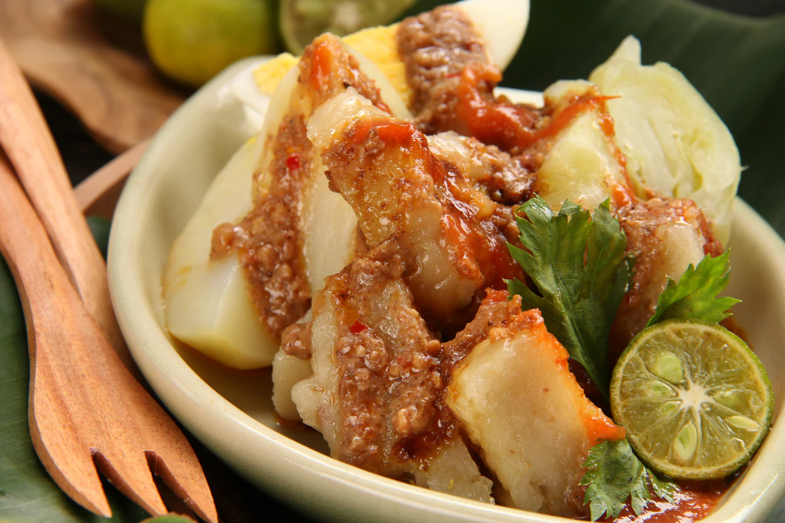

Makanan Indonesia yang Wajib Dicoba
Indonesia adalah tempat meleburnya berbagai rasa. Rumah bagi lebih dari 300 kelompok etnis, restoran ini menawarkan beragam hidangan lezat, banyak di antaranya menggunakan bumbu dan rempah untuk meningkatkan cita rasa. Hidangan lezatnya akan membuat Anda menginginkan lebih! Jadi, manjakan mata Anda dan jangan sampai ngiler dengan 10 makanan gurih Indonesia yang wajib dicoba ini:
1 | Rendang, Padang

Rendang, masakan asli Indonesia dari Padang, sering dipuji sebagai salah satu makanan terbaik dunia. Daging sapinya yang empuk dimasak dengan sempurna dengan bumbu dan rempah yang beraroma. Karena teksturnya yang juicy dan bumbu yang seimbang, rendang menjadi favorit para wisatawan!
Legenda mengatakan bahwa orang Minangkabau membawa hidangan ini dalam perjalanan jauh. Mereka membutuhkan makanan yang dapat diawetkan secara tradisional dan tidak kehilangan rasa serta kesegarannya. Oleh karena itu, masyarakat desa Minangkabau biasa memasak daging sapi dengan bumbu tradisional dan santan selama kurang lebih 7-8 jam, sebuah cara konvensional untuk mengawetkan daging sekaligus menjaga cita rasa lezatnya tetap utuh.
2 | Pempek, Palembang

Pempek, masakan Indonesia dari Palembang, adalah kue ikan tradisional yang terbuat dari daging ikan giling dan tapioka. Memiliki lapisan luar yang renyah dan tekstur kenyal yang lembut, masakan lezat ini disajikan dengan kuah asam manis bernama kuah cuko. Pendamping pempek yang biasa adalah irisan timun dan mie.
Konon jajanan renyah ini bermula ketika seorang warga desa di Palembang membuat resep baru dengan membumbui daging ikan giling dengan tapioka lalu menggorengnya. Ketika dia menyadari betapa lezatnya masakan itu, dia bersepeda melintasi desanya untuk menjual hidangan ini. Tak lama kemudian, pempek menjadi jajanan populer dan masih menjadi favorit masyarakat Indonesia. Meski banyak warung yang menjual masakan ini, namun tempat yang paling populer untuk membelinya adalah Permen Pempek di Palembang.
3 | Ketoprak in Jakarta
Populer dijual di jalanan Jakarta, ketoprak dianggap sebagai salad tahu. Terdiri dari tahu goreng, telur rebus, ketupat atau lontong, bihun, tauge, kol, dan mentimun. Ditaburi saus kacang dan kecap manis yang gurih, serta di atasnya diberi bawang merah goreng dan krupuk. Rasa manis pedas dari kuahnya dan sedikit garam dari tahu gorengnya melengkapi hidangan ini. Wajib dicoba saat Anda berkunjung ke Jakarta.
Dikatakan bahwa hidangan ini muncul ketika seorang pria, yang hanya makan kue beras kukus dan tauge, memutuskan untuk menikmati apa yang dimilikinya. Jadi dia menumbuk kacang tanah, bawang putih, dan cabai, lalu menambahkan air untuk membuat saus dengan konsistensi kental. Dia menambahkan saus kacang ini ke bahan-bahan sederhananya dan menciptakan ketoprak, jajanan kaki lima yang terkenal di Indonesia.
4 | Siomay, Bandung
Dijual hampir di mana-mana di Indonesia, siomay adalah jajanan pinggir jalan sederhana yang setiap orang harus mencobanya setidaknya sekali seumur hidup. Ini sangat populer di Bandung, Jawa Barat. Mirip dengan masakan Cina shaomai, siomay terdiri dari pangsit ikan kukus dengan tekstur kenyal. Namun siomay disajikan dengan bahan berbeda, antara lain irisan kentang, pare, kol gulung, dan tahu. Ditemani dengan saus kacang yang nikmat menambah semburat gurihnya.
5 | Gudeg, Yogyakarta

Gudeg adalah hidangan manis khas Yogyakarta. Terbuat dari nangka atau gori mentah yang dipadukan dengan santan kental dan gula aren. Untuk mendapatkan rasa gudeg yang autentik, orang sering memasaknya di dalam periuk tanah di atas api kayu atau arang. Camilan lezat ini sering disajikan dengan bumbu seperti ayam, telur rebus, tempe, tahu, dan sambal krecek atau kulit sapi renyah dengan sambal. Umumnya dijual di jalanan Yogyakarta, namun tempat membeli gudeg yang paling terkenal adalah Wijilan dan Barek.
6 | Nasi Liwet, Solo
Berasal dari kota Surakarta, nasi liwet merupakan sajian nasi berbumbu nikmat yang dimasak dengan santan, kuah ayam, daun salam, dan serai. Masakan Indonesia ini terdiri dari nasi lembut beraroma dengan suwiran ayam, telur dadar, cabai, dan aneka sayuran. Banyak warung pinggir jalan di Solo yang menjual nasi liwet dan menyajikannya dengan berbagai hidangan, seperti tempe atau telur pindang (telur yang direbus dengan kecap asin dan bawang merah cincang). Disajikan dengan dibungkus dengan daun pisang atau jati.
7 | Lumpia, Semarang
Semarang terkenal dengan makanannya yang lezat, termasuk makanan khasnya yang bernama lumpia. Hidangan pembuka ini terinspirasi dari lumpia Cina namun dimodifikasi dengan cita rasa asli Semarang. Lumpia menawarkan semburan cita rasa Indonesia pada isiannya dengan bahan-bahan seperti rebung, ayam cincang, telur orak-arik, ebi, atau udang kering yang dimasak dengan bumbu sempurna.
Lumpia memiliki lapisan luar yang tipis dan renyah dengan isian sayuran yang manis dan gurih di dalamnya. Disajikan dengan saus spesial, bumbu yang sempurna untuk menemaninya.
8 | Rawon, Surabaya

Rawon, semur daging sapi yang lezat, merupakan masakan khas Surabaya. Ramuan tradisional seperti serai, cabai, jahe, daun jeruk, dan kluwek atau kacang hitam ditambahkan ke dalam daging empuk yang direbus perlahan. Kluwek inilah yang memberikan rasa yang kaya dan warna hitam yang unik pada rebusannya. Konon dulu rawon merupakan hidangan kampungan, namun kelezatannya segera menjadi populer di kalangan bangsawan Indonesia!
9 | Bakso, Malang

Disajikan dengan bakso dan pangsit goreng dalam kuah kaldu hangat yang nikmat, bakwan Malang merupakan masakan khas Indonesia yang cocok disantap di musim hujan. Berasal dari Malang, masakan ini diadaptasi dari tradisi Indonesia-Tionghoa dan berbahan dasar bakso sapi atau ayam. Hidangan makanan rumahan yang lezat ini terkadang berisi bihun, daun bawang, dan bawang merah goreng. Kecap manis dan sambal juga disajikan bagi pelanggan yang ingin menambah cita rasa pada makanannya. Restoran terkenal yang menyajikan bakso Malang terbaik adalah Bakso Presiden Malang.
10 | Satay Lilit, Bali
Bali tidak hanya terkenal dengan pantainya yang eksotik namun juga kulinernya yang menggugah selera. Salah satu hidangan yang dijual oleh pedagang kaki lima di Bali adalah sate lilit, makanan jajanan khas Indonesia yang terbuat dari daging cincang. Hidangan ini dapat dibuat menggunakan berbagai jenis daging, namun daging babi adalah bentuk yang paling populer digunakan. Bumbu dan rempah seperti serai, lengkuas, cabai, dan daun jeruk ditambahkan untuk memberikan rasa pedas segar. Masakan Indonesia yang satu ini wajib dicoba saat Anda berkesempatan mengunjungi Bali!
Setiap gigitan makanan Indonesia penuh dengan cita rasa Indonesia yang eksotis. Restoran ini menggabungkan bahan-bahan terbaik dari alam dengan kisah masyarakat lokal dan menawarkan pengalaman kuliner yang sempurna. Temukan cita rasa makanan Indonesia yang luar biasa dan Anda akan mengerti mengapa makanan ini disukai banyak orang. Jadi, ingin mencoba makanan asli Indonesia?
Suggested for You

27-10-2023
Candi Borobudur, Pusaka Kolosal Magelang, Jawa Tengah

27-10-2023
Labuan Bajo, Sepetak Surga yang Terletak di Indonesia Timur

27-10-2023